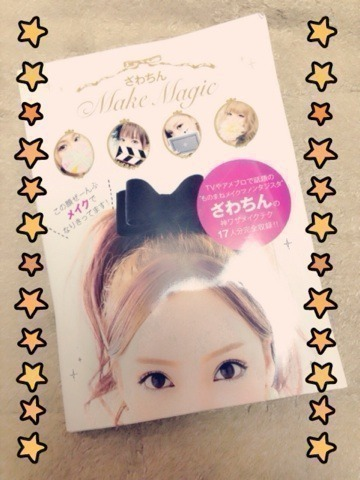

| 2014/03 29 Sat | PON！祭ヽ(・∀・)ﾉ |
昨日はPON！祭でした！
来て下さった皆さん、見て下さった皆さんありがとうございましたっ☆
過去最高人数を動員したそうでっ！！
乃木坂上り坂を実感しました！
皆さん本当にありがとうございます

来年も出たいな〜！
あっあと。。
生駒ちゃんPON！のコメント収録で乃木坂ふぁむの前でとある宣言をしました。
OAするかしら？
でもチェックよろしくです
とある番組にてざわちんさんと会いましたっ！！！
モノマネメイクもブログも見ていたから会えて凄く嬉しかったですっ☆

頂きました〜ヽ(・∀・)ﾉ
あとメイク道具もプレゼントして下さいましたっ！！
私もモノマネメイク出来るかな〜？？

前回のブログ。
総選挙の事について少し書かせてもらいました。
様々な意見があって。
ひとつひとつ見ながら考えました。
何故か涙が流れてきて。。。
それはひとつひとつのコメントに皆さんの気持ちを感じたからです。
乃木坂46の生駒ちゃんじゃなくなってしまう気がする
と書いている方が結構いました。
そこは心配しないで下さい。
私は兼任してAKB48として活動しても
私は乃木坂46の生駒里奈なんです。
いろんな意見を知り。
またいろいろ考えて。
でも自分の根っこにあるのは乃木坂46。
それは揺るぎません。
だから遠くに行っちゃうとか、変わっちゃうとかは思わなくていいよ。
私は少なくともあなたにそうは思わせない活動をするつもりです。
なんか。。。
いろいろ心配させちゃってごめんなさい。
メンバーもごめんね。。。
はっきりと答えの出ない問題に挑戦するのは難しい。
答えがないから、
どちらもよくて、どちらもよくない。
難しいですね。
あ。
NOGIBINGO!2最終回でしたね〜。
まっつんからの手紙。
みんなの思いを受け取りました。
ありがとう。
最後イジリーさんに思いっきりツっこまめてよかったな〜ヽ(・∀・)ﾉ
スリーないかな〜
すり〜！
へばなっ！☆
コメント(608)
2014/03/29 21:12